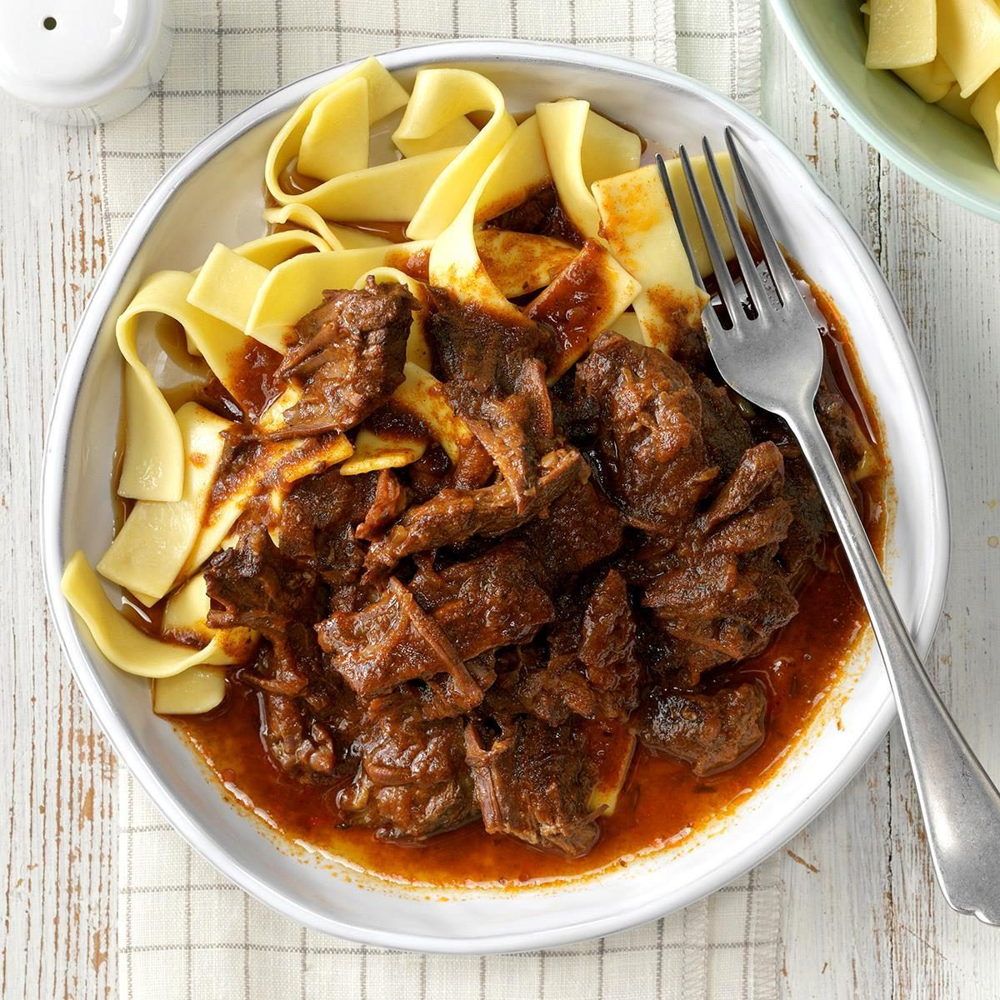

Goulash
This traditional Hungarian/German dish is based on the recipe by The New York Times

Description
This warm hearty dish served with egg noodles reminds me of my grandmother's German heritage, as well as my adventures studying abroad in Europe my sophomore year of college. #goodtimes
Ingredients
- 2 Teaspoons unsalted butter
- 2 medium onions, peeled and thinly sliced
- 2 tablespoons sweet Hungarian paprika
- 1 teaspoon caraway seeds
- 1 pound beef stewing meat, trimmed and cut into 1 inch cubes
- 1/4 cup all-purpose flour
- 2 cups beef broth, homemade or low-sodium canned
- 1 tablespoon fresh lemon juice
- 2 teaspoons salt, plus more to taste
- 1/4 teaspoon freshly ground pepper
- 2 roma tomatoes
- Garlic
Steps
- Melt the butter in a large pot over medium heat. Add the onions and cook, stirring frequently, until wilted, about 10 minutes.
- Stir in the paprika and caraway seeds and cook 1 minute more.
- In a bowl, toss the beef with the flour to coat well. Add the beef to the onion mixture. Cook, stirring, for 2 minutes.
- Add 1/2 cup of the broth, stirring and scraping the bottom of the pot. Gradualy stir in the remaining broth. Bring to a boil, then reduce to a slow simmer. Cover and cook until the beef is tender, about 1 1/2 hours.
- Stir in the lemon juice, salt, and pepper to taste. Serve over wide egg noodles.